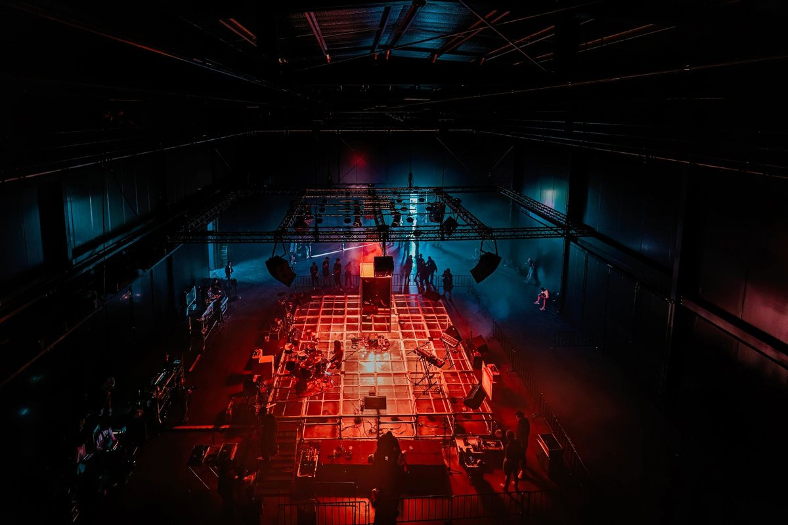

01 · Lane one
Music
Heavy, honest, and finished.
WPAI makes heavy music — metal, industrial, experimental, and country crossover under one brand. Every track is written, produced, and mixed in-house. AI handles drafts and arrangement experiments; the final sound is directed and signed off by a human ear. Nothing ships that doesn't hit.
The music lane is the oldest part of the studio and the financial foundation. Flagship thesis track: Weaponized Mind. Releases go on Bandcamp and streaming. Licensing is open to sync and placement inquiries. The catalog grows slowly because quality gates are real.
GenreHeavy / Industrial / Experimental
ProductionIn-house, AI-assisted
DistributionStreaming · Bandcamp in motion
LicensingSync inquiries open
Active — releasing
